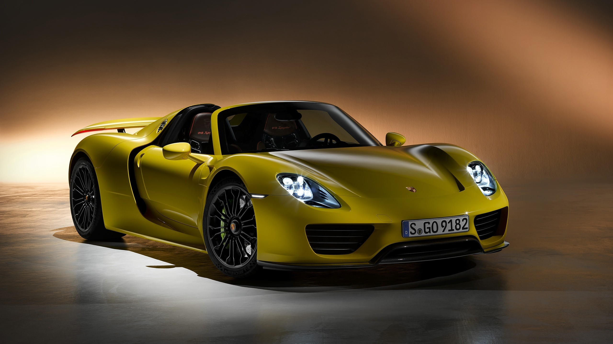

Em 2013, a Porsche fez história novamente ao lançar o 918, o primeiro supercarro híbrido. No mesmo ano, McLaren e Ferrari também lançaram seus respectivos modelos concorrentes, mas o 918 é considerado como o primeiro passo em direção à hibridização de supercarros. Sendo um dos 3 carros mais icônicos da Porsche, o modelo representava o suprassumo da tecnologia alemã e, com apenas 918 unidades feitas, o propósito do carro era ser um carro para quebrar recordes e também para ser usado no dia-a-dia. Apesar da potência, controles eletrônicos permitem seu uso nas cidades, proporcionando conforto e segurança ao motorista. Feito inteiro em CFRP - um plástico reforçado com fibra de carbono -, o 918 alcança os 340 km/h e todas suas unidades foram feitas na pricipal fábrica da Porsche, em Stuttgart, onde nem seu irmão mais velho e tão icônico quanto, o Carrera GT, foi produzido, provando mais uma vez que o 918 é um dos grandes acertos da Porsche.